To Execute
1. Add the Module to Execute Standard/TMG Emme Tools
- Step 1: Add "ExecuteToolsFromModellerResource" module to "To Execute"
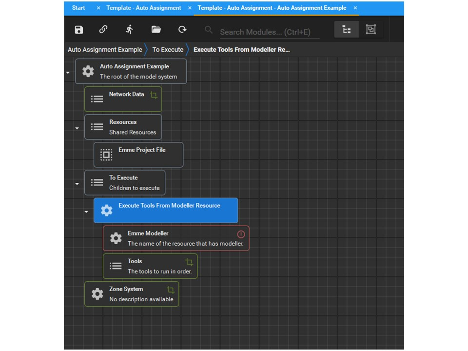
- Step 2: Select "ResourceLookup" for Emme Modeller module
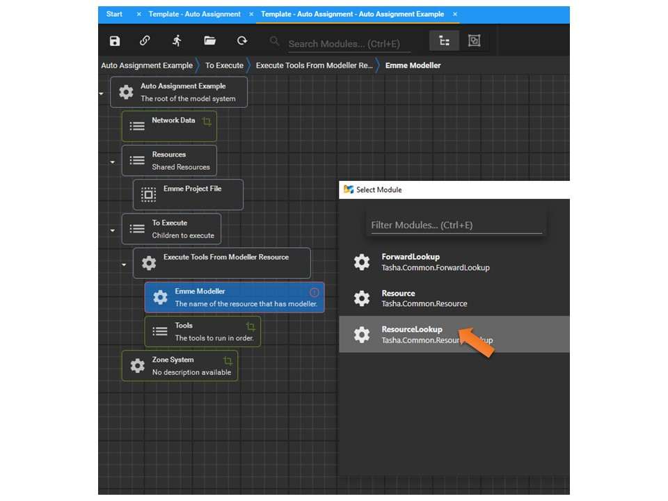
- Step 3: Enter the same name as the Resource Name of the target Emme Project file loaded before (i.e., "Emme Project")
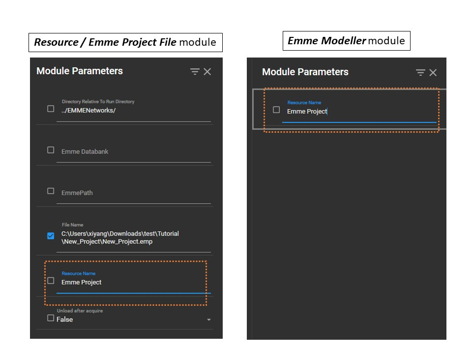
2. Import Network Package
- Step 1: Add "ImportNetworkPackage" module to Tools
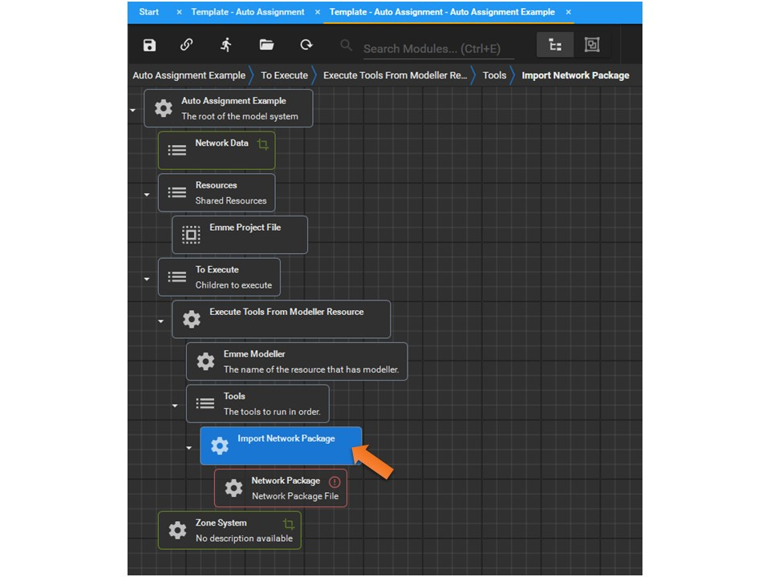
- Step 2: Enter the parameter values of the Import Network Package module.
(Note: Values below are examples only, you may customize any field.)
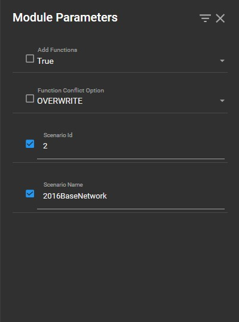
- Step 3: Choose "FilePathFromOutputDirectory" for Network Package module
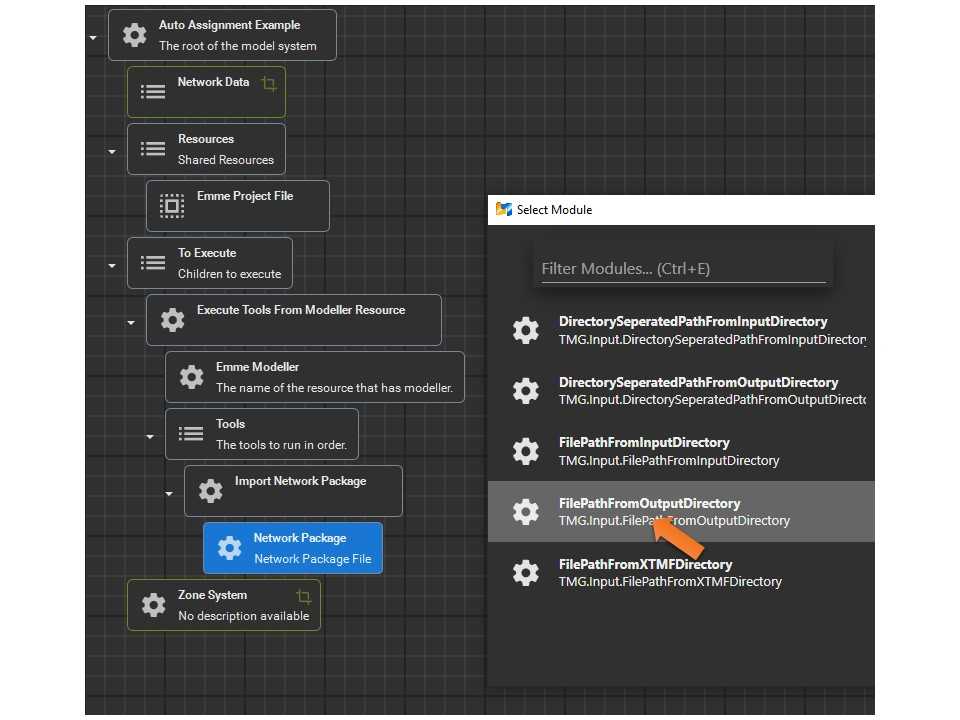
- Step 4: Select the Network Package file (*.nwp) to load into the target Emme project file for use
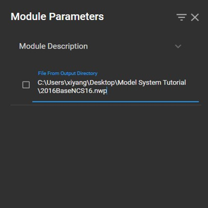
3. Load Attributes for Road Assignment
- Step 1: Add a new "ExtraAttributeContextManager" module to Tools, and customize the module parameters.
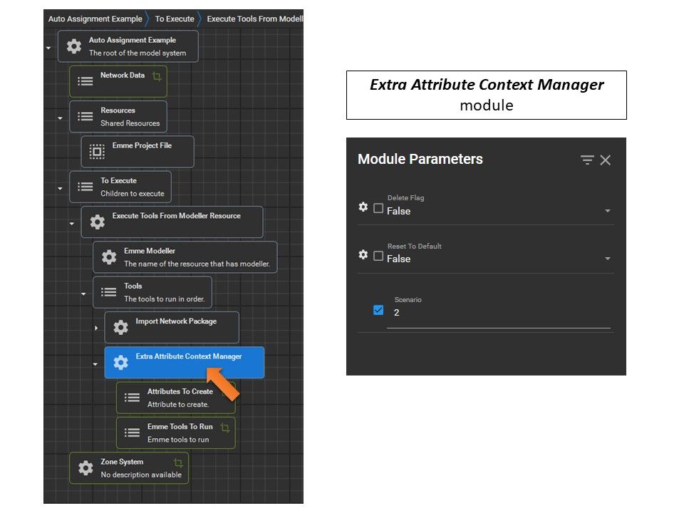
- Step 2: Add the extra attributes to Attribute To Create* module and right click each attribute to rename it
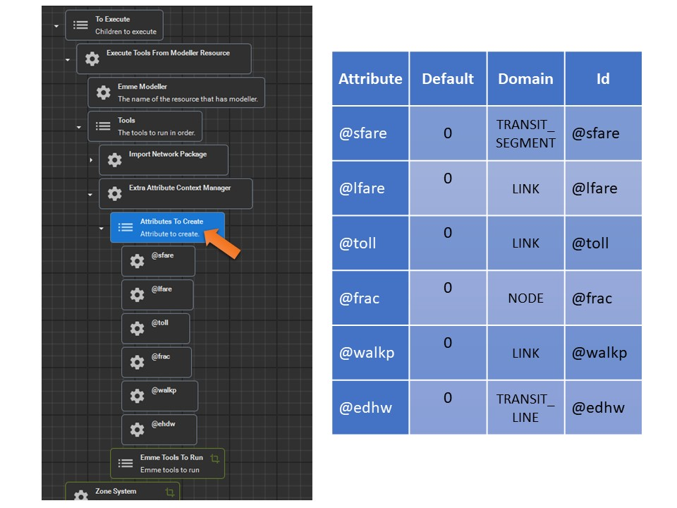
- Step 3: Add the following tools to Emme Tools To Run module (the tools will be executed in order):
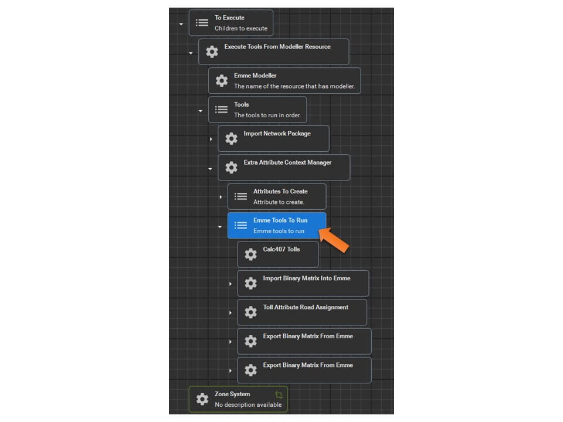- Calc407Tolls (Calculate 407 Tolls)
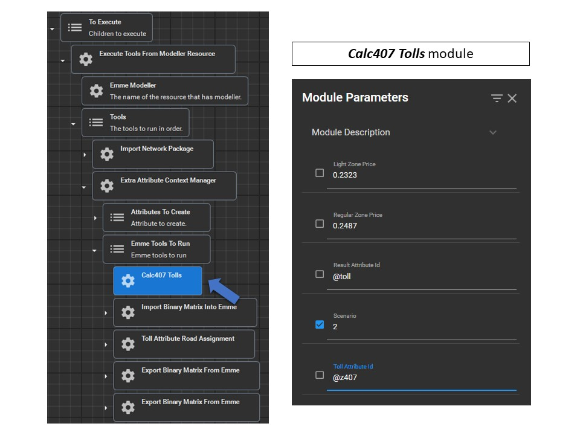
- ImportBinaryMatrixIntoEmme (Import Demand Matrix)
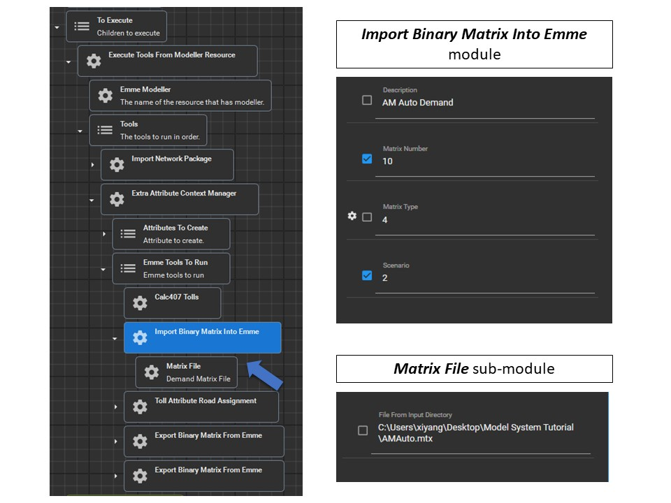
- TollAttributeRoadAssignment (Road Assignment Settings), parameter 'On Road TTFs' is missing from the example image, leave as default value 3-128. Leave 'Tallies' sub-module empty
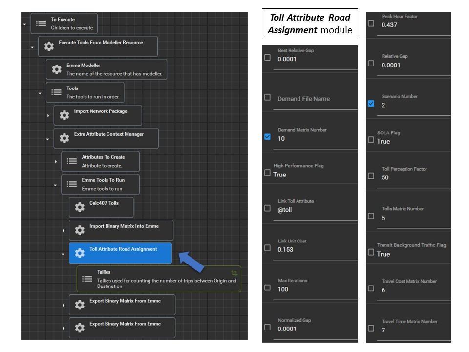
- ExportBinaryMatrixFromEmme (Export Auto Travel Cost Matrix)
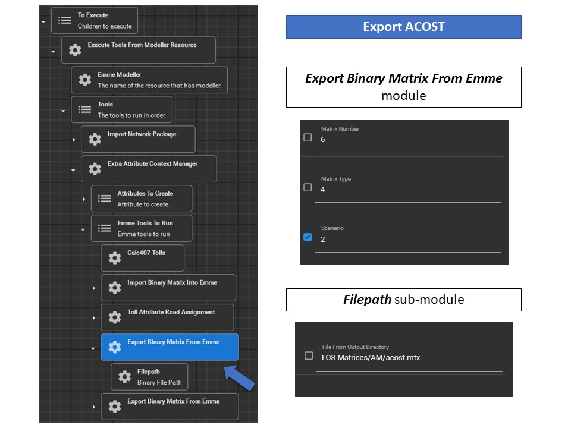
- ExportBinaryMatrixFromEmme (Export Auto Travel Time Matrix)
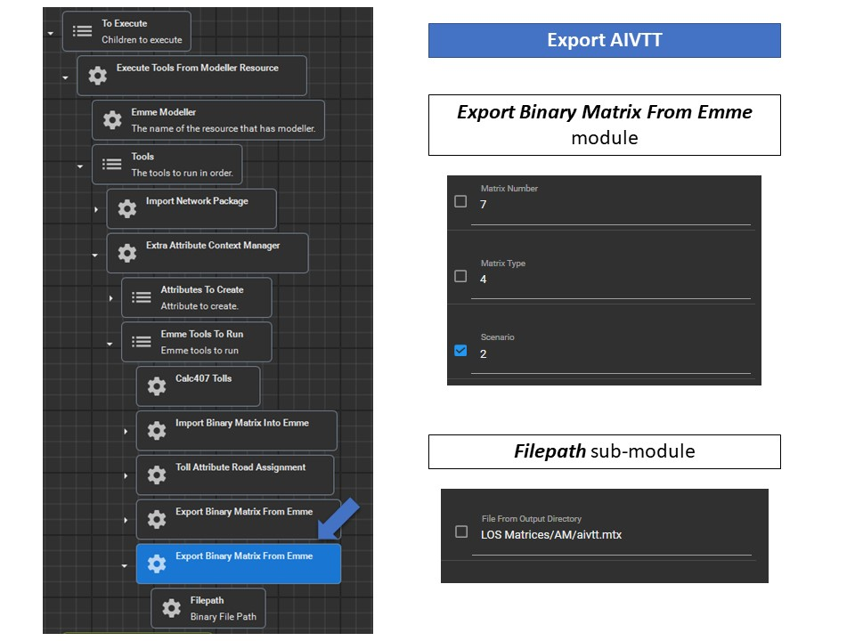
- Calc407Tolls (Calculate 407 Tolls)
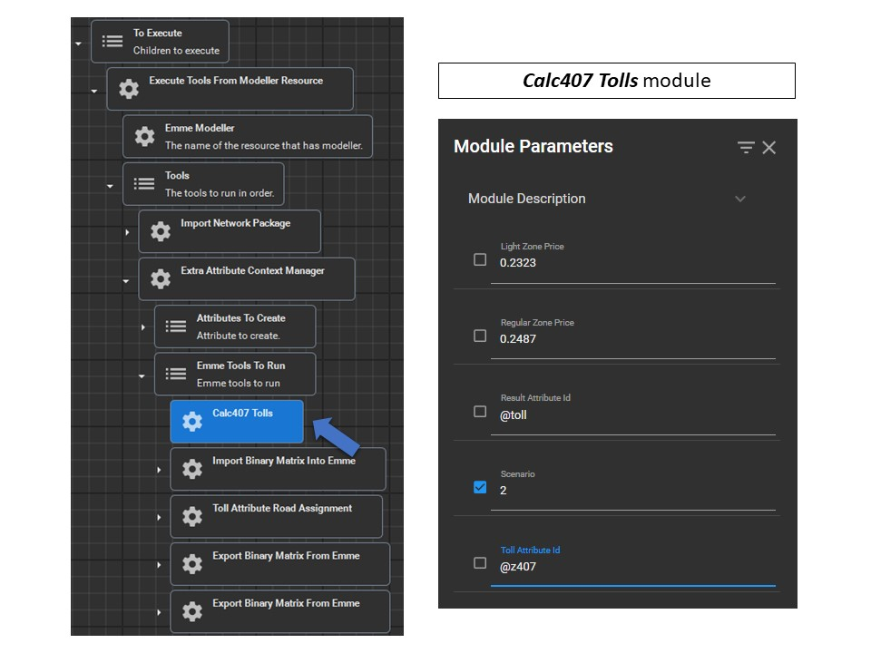